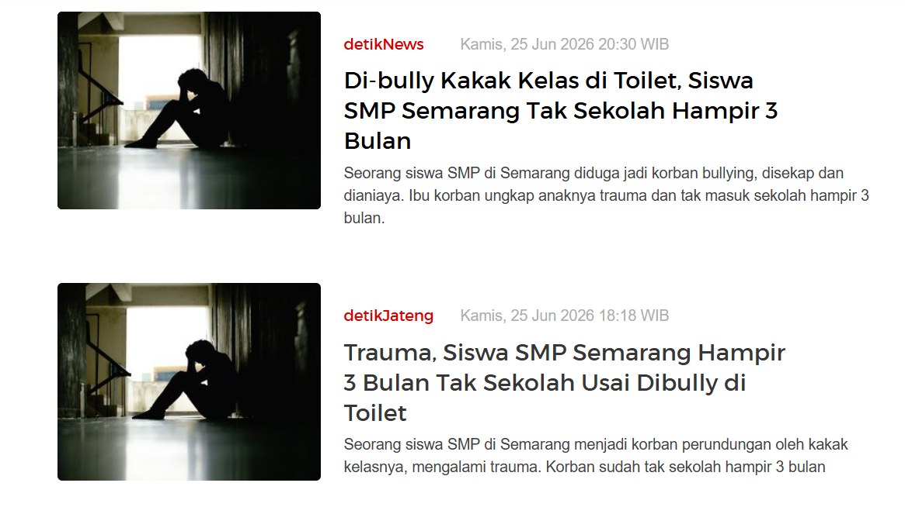

Tugas 5 - Pendidikan Agama Islam
Manusia merupakan makhluk ciptaan Allah SWT yang diberikan akal, hati, dan kemampuan untuk membedakan antara perbuatan yang baik dan buruk. Dalam kehidupan bermasyarakat, manusia diharapkan mampu menjaga sikap, perilaku, serta hubungan sosial sesuai dengan ajaran agama dan nilai moral.
Namun, perkembangan teknologi dan media sosial juga membawa berbagai tantangan. Tidak sedikit perilaku masyarakat yang menyimpang dari nilai agama, seperti perundungan (bullying), penyebaran ujaran kebencian, diskriminasi, hingga tindakan yang merendahkan orang lain.
Menurut saya, sebagai generasi muda kita tidak boleh ikut melakukan ataupun membenarkan perilaku tersebut. Sebaliknya, kita harus menjadi pribadi yang mampu menghargai sesama, menjaga lisan maupun tulisan, serta menyebarkan hal-hal yang bermanfaat.
Sumber: Kementerian Agama RI. Pendidikan Agama Islam dan Budi Pekerti.
Dalam Islam manusia diciptakan sebagai khalifah di bumi yang bertugas menjaga kehidupan serta menebarkan kebaikan. Manusia juga diberikan kebebasan memilih, namun setiap perbuatannya akan dimintai pertanggungjawaban di hadapan Allah SWT.
Karena itu, setiap muslim harus menjaga akhlak, menghormati orang lain, serta menjauhi segala bentuk perilaku yang dapat merugikan sesama.
Salah satu perilaku yang masih sering terjadi di masyarakat adalah tindakan bullying atau perundungan, baik secara langsung maupun melalui media sosial. Korban sering mengalami tekanan mental, kehilangan rasa percaya diri, bahkan mengalami gangguan psikologis.

Perilaku bullying bertentangan dengan ajaran Islam karena menyakiti hati orang lain dan merusak persaudaraan. Islam mengajarkan umatnya untuk saling menghormati, menjaga kehormatan sesama, dan berkata baik.
Menurut saya, kasus bullying tidak boleh dianggap sebagai candaan. Setiap orang memiliki hak untuk dihargai tanpa memandang kondisi fisik, ekonomi, ataupun latar belakangnya. Kita harus berani menghentikan tindakan tersebut dan menciptakan lingkungan yang saling menghormati.
Sumber gambar: Screenshot berita bullying news detik.com
Artinya: "Wahai orang-orang yang beriman! Janganlah suatu kaum mengolok-olok kaum yang lain, boleh jadi mereka (yang diolok-olok) lebih baik daripada mereka (yang mengolok-olok). Jangan pula perempuan-perempuan mengolok-olok perempuan lain. Janganlah kamu saling mencela dan janganlah saling memanggil dengan gelar-gelar yang buruk."
(QS. Al-Hujurat: 11)
Ayat tersebut menjelaskan bahwa Allah SWT melarang setiap bentuk penghinaan, ejekan, maupun pemberian julukan yang buruk kepada orang lain. Larangan ini sangat relevan dengan fenomena bullying yang masih sering terjadi, baik secara langsung maupun melalui media sosial.
Bullying tidak hanya melukai perasaan korban, tetapi juga dapat menyebabkan hilangnya rasa percaya diri, gangguan psikologis, bahkan memengaruhi masa depan seseorang. Oleh karena itu, setiap individu memiliki tanggung jawab untuk menjaga ucapan, menghormati sesama, dan menggunakan media sosial secara bijaksana.
Menurut saya, pencegahan bullying harus dimulai dari diri sendiri dengan membiasakan sikap saling menghargai, tidak mudah menghakimi orang lain, serta berani mengingatkan teman apabila melihat tindakan yang merendahkan atau menyakiti orang lain.
Masyarakat yang baik adalah masyarakat yang menjunjung tinggi nilai agama dan moral dalam kehidupan sehari-hari. Bullying merupakan salah satu perilaku yang harus dihindari karena bertentangan dengan ajaran Islam dan dapat merugikan banyak pihak.
Menurut saya, setiap orang memiliki tanggung jawab untuk menciptakan lingkungan yang aman, saling menghormati, serta berani menolak segala bentuk kekerasan maupun perundungan.